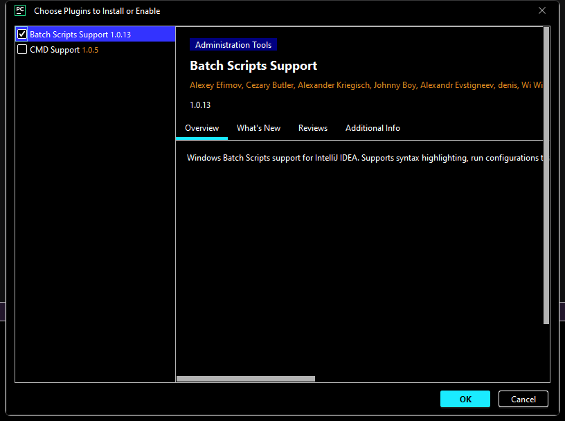
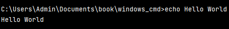
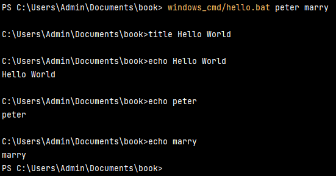
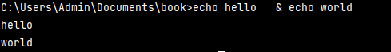
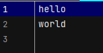
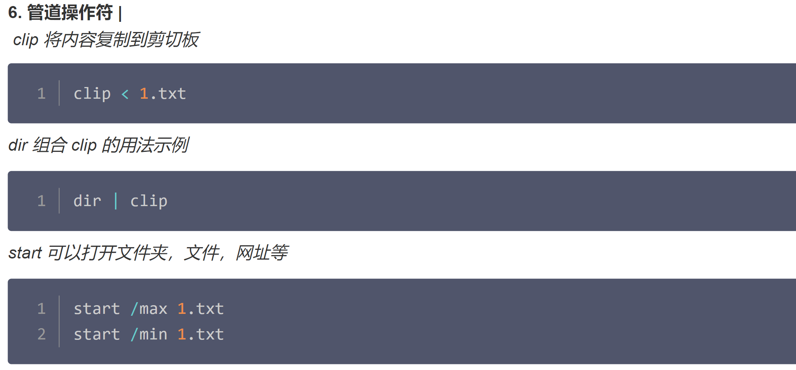

Install plugins for windows bat/cmd
To help you to manage bat files, Jetbrains suggest you to install plugins.

A. Basic setting commands
Change command prompt title
title <title>
Print out text
echo <text>

System variables
echo %1
echo %2

After running command, we observe that command line run in bat/cmd file is linear. It means that it will run one by one.
B. Run with some logics
In this example, we are going to create a new bat file named "logic.bat" to include some logical operations.
Create a variable
set /A variable-name=value
- variable-name is the name of the variable you want to set.
- value is the value which needs to be set against the variable.
- /A – This switch is used if the value needs to be numeric in nature.
Logic operations
In windows bat/cmd, we can't use symbolic operators like '>', '<' or '==' to build the logic.
- EQU - equal
- NEQ - not equal
- LSS - less than
- LEQ - less or equal
- GTR - greater than
- GEQ - greater or equal
example:
set /A a = 1, b = 2
rem run some logics
if %a% equ %b% (echo yes) else (echo no)
if %a% neq %b% (echo yes) else (echo no)
if %a% lss %b% (echo yes) else (echo no)
if %a% leq %b% (echo yes) else (echo no)
if %a% gtr %b% (echo yes) else (echo no)
if %a% geq %b% (echo yes) else (echo no)
Other operators
& operator
The & operator is used to execute commands in sequence, as if they were on the same line, separated by spaces. The commands will be executed one by one. You can write down this command in command prompt directly, but it runs successfully in bat/cmd file.
echo hello & echo world
&& operator
The && operator is used to execute commands in sequence, but the commands behind "&&" will be executed only if the previous command is executed successfully.
find \"ok\" c:\test.txt && echo SUCCESS
|| operator
The || operator is used to execute commands in sequence, but the commands behind "||" will be executed only if the previous command occurs error.
find \"ok\" c:\test.txt || echo FAIL

> operator
The > operator is used to redirect the output of a command to a file. If the file already exists, it will be overwritten.
In this example, we create a new file named "test.txt" and write down "hello" in it.
echo hello > windows_cmd/test.txt
Result:
>> operator
The >> operator is used to redirect the output of a command to a file. If the file already exists, the new data will be appended to the end of the file.
In this example, we append "world" to the end of "test.txt".
echo world >> windows_cmd/test.txt

< operator
The < operator is used to redirect the input of a command to a file.
In this example, we read the content of "test.txt" and print it out.
clip < windows_cmd/test.txt

Problems: Can we automate gitbook build and push to github?